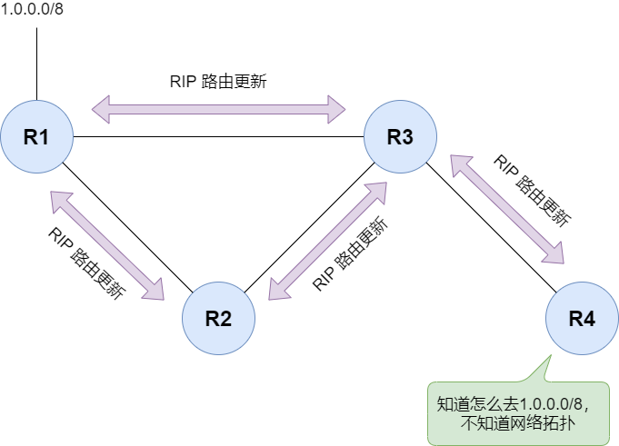

RIP (Routing Information Protocol)
RIP 是最古老的距离矢量路由协议之一，主要用于小型网络。
RIP는 주로 소형 네트워크에 사용되는 가장 오래된 거리 벡터 라우팅
프로토콜 중 하나입니다.
核心特点(핵심적 특징)
-
度量值： 使用“跳数 (Hop Count)”作为唯一衡量标准。
COST： 홉 카운트(Hop Count)를 유일한 척도로
사용합니다.
-
最大跳数： 15 跳，16 跳即表示网络不可达。최대 점프수：
15번 점프, 16번 점프하면 네트워크에 도달할 수 없음을 의미합니다.
-
更新周期： 默认每 30 秒广播一次完整的路由表。
--업데이트 주기: 기본적으로 30초마다 전체 라우팅
테이블을 브로드캐스트합니다.
RIP 的工作原理(작동원리)
RIP 遵循 **Bellman-Ford
算法**。每台路由器只知道到达目的地的距离（跳数）和方向（下一跳）。
--RIP 따르다. **Bellman-Ford 알고리즘**. 각 공유기는 목적지까지의
거리(점프 수)와 방향(다음 점프)만 알고 있습니다.
